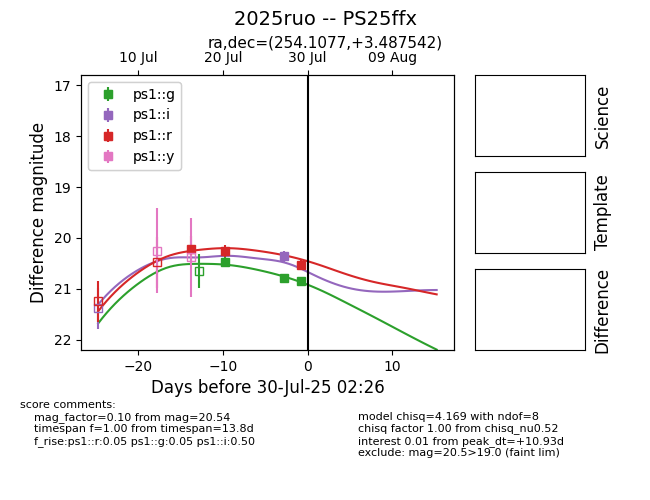

Target 2025ruo at 2025-07-30 02:26, see:
TNS: wis-tns.org/object/2025ruo
YSE: ziggy.ucolick.org/yse/transient_detail/2025ruo
alt names
2025ruo (yse,tns)
PS25ffx (panstarrs)
coordinates:
equatorial (ra, dec) = (254.1077,+3.48754)
galactic (l, b) = (22.2673,+27.06773)
photometry
last ps1::g=20.84, ps1::i=20.36, ps1::r=20.54
3 ps1::g, 1 ps1::i, 3 ps1::r detections
